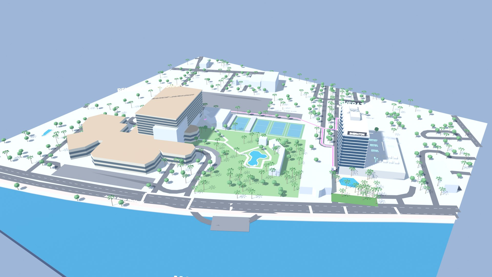
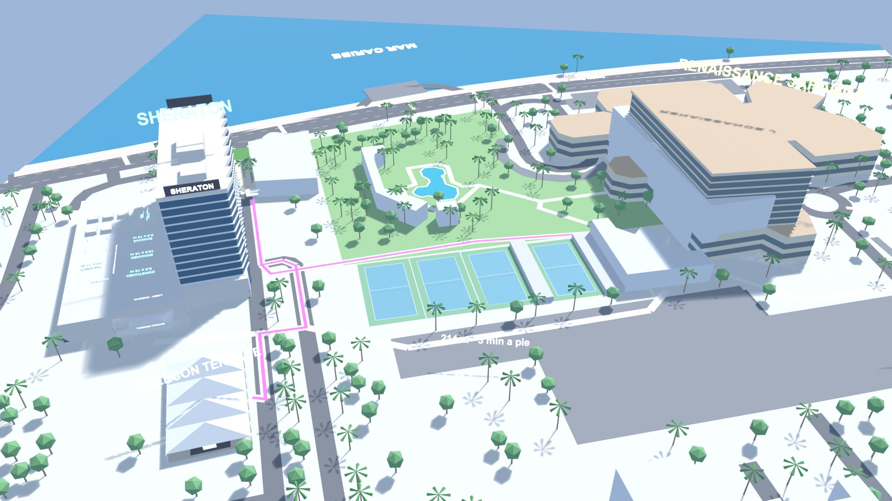
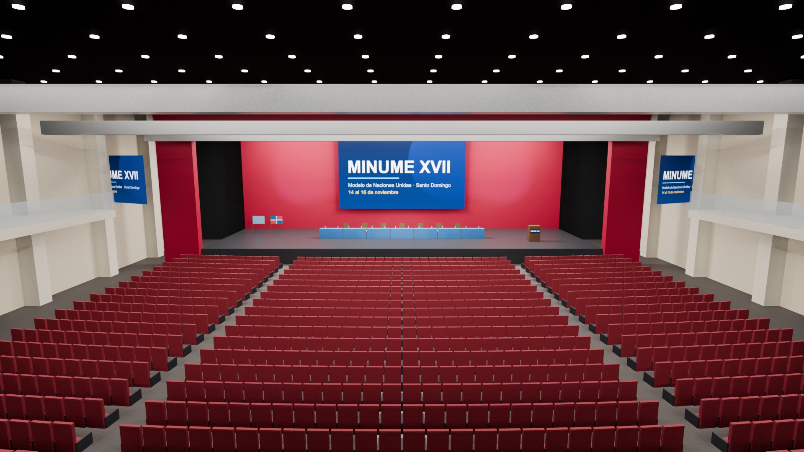
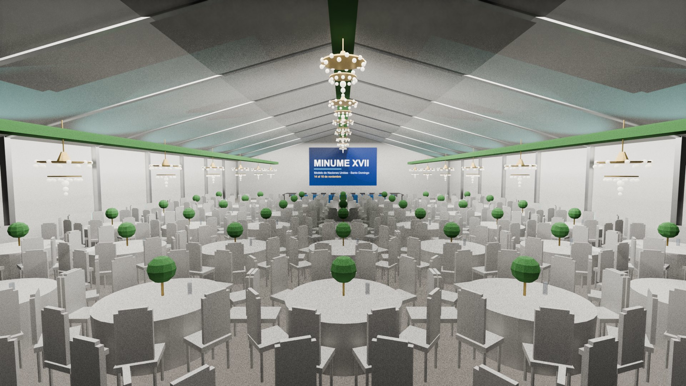
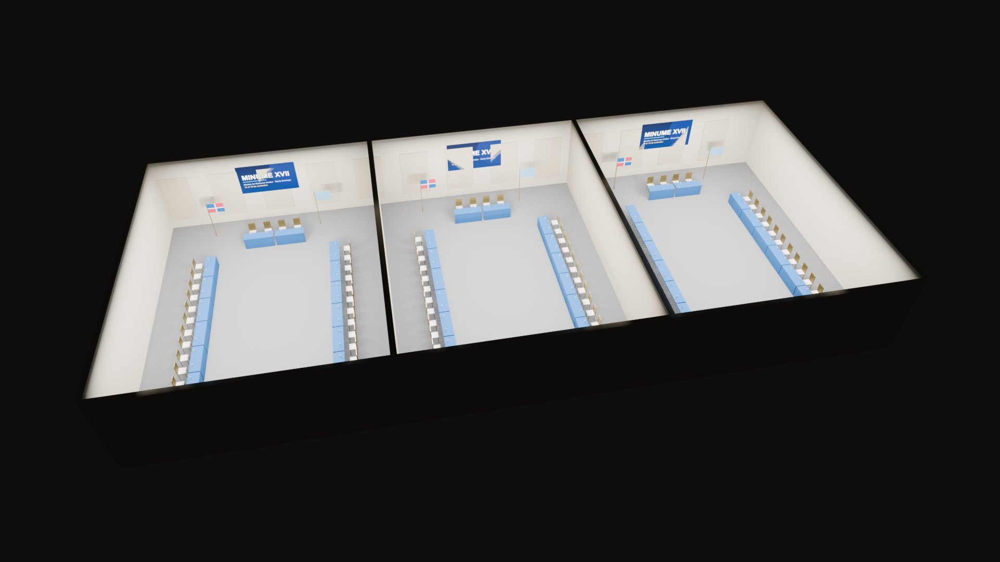
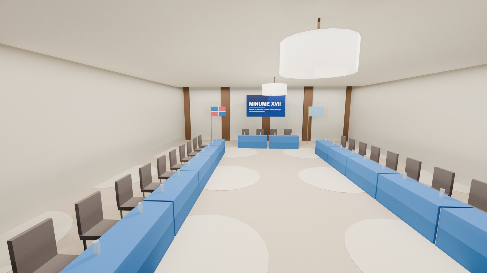
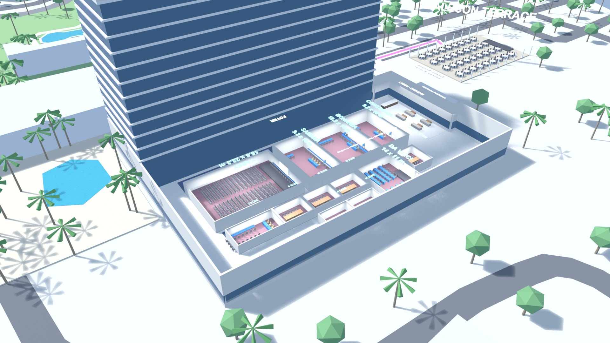

Cómo entrar, qué hace cada equipo, el mapa 3D de las sedes, el plano de asientos y los salones de eventos.

minume-xvii.vercel.app 14 al 16 de noviembre de 2026 · Santo DomingoHecho por Albert Silvestre 21 de octubre de 2026
01Qué es y cómo se entra
El staff de MINUME XVII tiene un sistema propio por equipo, todos en minume-xvii.vercel.app. Cada persona entra con su código personal y ve solo lo de su equipo; todos comparten la misma base de datos en tiempo real.
Sistema
Quién lo usa
Prefijo del código
Asistencia
Asistentes de comisión y coordinación de Asistencia
AS, CO
Seguridad y Traslado
Seguridad, autobuses de participantes y movilización entre sedes
SE, TR
Bienestar
Bienestar físico y emocional
BI
Eventos y Protocolo
Ceremonias, eventos e invitados especiales
EP
Coordinación general
Coordinación (lo ve todo)
CG
Abrir el enlace y tocar el sistema del equipo (o escribir el código en el Inicio: la página reconoce el equipo por las dos letras).
Escribir el código personal, por ejemplo CG-7KQ2MX. El servidor lo verifica; un código inventado o anulado no entra.
Instalarlo como app: en iPhone, Safari → Compartir → «Agregar a pantalla de inicio»; en Android, Chrome → «Instalar app».
Después de entrar una vez, el sistema abre aunque no haya internet. Lo que se anote sin señal queda en cola y se envía solo cuando vuelve la conexión. La sesión dura 30 días.
01bCódigos de acceso
Hay 8 códigos de prueba para mostrar los sistemas; los códigos reales del staff los crea Coordinación general en «Datos del evento».
Código
Persona de ejemplo
Equipo
Entra a
AS-4821
María Pérez
Asistente de comisión (AMS)
Asistencia
CO-0001
Beatriz Pérez
Coordinación de Asistencia
Asistencia
SE-1093
Luis Gómez
Seguridad
Seguridad y Traslado
TR-5570
Ana Rosario
Traslado
Seguridad y Traslado
BI-2207
Sofía Matos
Bienestar físico
Bienestar
BI-3318
Marcos Peña
Bienestar emocional
Bienestar
EP-2603
Paola Ventura
Eventos y Protocolo
Eventos y Protocolo
CG-0001
Coordinación general
Coordinación general
Coordinación general
Los códigos reales tienen seis letras y números después del guion (por ejemplo CG-7KQ2MX), se ven una sola vez al crearlos y se pueden anular. El código real de Coordinación general de Albert está guardado aparte, fuera de esta guía.
Anular los 8 códigos de prueba antes del evento (Datos del evento → Códigos de acceso → Anular)
02Las sedes
MINUME XVII se hace en dos hoteles del Malecón y una carpa: el Renaissance Santo Domingo Jaragua, el Sheraton Santo Domingo y el Malecón Terrace (la carpa del Sheraton, al norte, junto a Pasteur 8). Entre las sedes se va caminando. Los autobuses son para los participantes: los recogen en su hotel de hospedaje y los llevan de vuelta al terminar.
Salón
Hotel
Medidas
Techo
Capacidad
Uso de ejemplo
Teatro La Fiesta
Jaragua
unos 1,035 m²
alto
1,152 en teatro
Apertura y clausura
Anacaona (3 secciones)
Jaragua
40 × 18 m
5 m
800 teatro, 600 banquete
CSNU, AMS y CIJ
Marién, Maguá, Higüey
Jaragua
8.8 × 8.9 m
3.2 m
50 teatro
PNUD, COP31, ONUDC
Maguana
Jaragua
13 × 8.9 m
2.9 m
90 teatro
CDT
Las Olas
Jaragua
7.3 × 13 m
2.4 m
50 teatro
FS-CDH
Gran Salón (Samaná + Bonanza + Constanza)
Sheraton
31 × 16 m
4.2 m
650 teatro, 335 banquete
ONUDI, UNCTAD, OMA
Yarey
Sheraton
15.6 × 22.3 m
3.3 m
300 teatro
OMT
Da Vinci
Sheraton
14 × 11 m
3.1 m
70 teatro
CIME
Este I a VI
Sheraton
7.5 × 5.5 m (Este I: 11 m)
2.6 m
30 a 40
CRPD
Board Room
Sheraton
sala de juntas
—
mesa fija
UNESCO-JD
Malecón Terrace (carpa)
Sheraton
36 × 23 m
carpa
900 teatro, 500 banquete
Almuerzos y noche cultural
Medidas y capacidades de los cuadros de capacidades de cada hotel. Qué comisión va en cada salón es de ejemplo: coordinación lo cambia en «Datos del evento» y todos los equipos lo ven al instante.
03Mapa 3D y «Cómo llegar»
De la puerta este del Jaragua a la entrada oeste del Sheraton son 259 m, unos 4 minutos a pie; del Sheraton a la carpa del Malecón Terrace, 148 m, unos 2 minutos. El mapa de cada sistema es una maqueta 3D propia de las dos sedes y la ruta morada va siempre por las aceras.
259 mPuerta este del Jaragua → entrada oeste del Sheraton · 4 min
342 mLobby del Jaragua → entrada oeste del Sheraton · 5 min
148 mEntrada oeste del Sheraton → Malecón Terrace · 2 min

La ruta morada del Jaragua al Sheraton: al norte por la acera, por la calle de servicio al borde de las canchas de tenis y bajando por el acceso del Sheraton.
Elegir «Desde» y «Hasta» (o tocar un lugar) y ver la ruta morada con flechas que avanzan, los metros, los minutos y los pasos escritos.
«Mi salón» lleva directo al salón de la comisión de quien entró.
«Guíame con el GPS» sigue a la persona mientras camina y recalcula la ruta. A más de 700 m de las sedes abre Google Maps para llegar al hotel.
«Salones por dentro» quita los techos del Sheraton y muestra cada salón con su nombre.
Seguridad, Traslado y Coordinación ven al «Equipo en vivo» sobre la misma maqueta; Coordinación pone puntos (acreditación, primeros auxilios, salidas) tocando el mapa.
Para explicárselo a Heidi · movilización«Los grupos salen por la puerta este del Jaragua, junto a la piscina. Caminan hacia el norte por la acera hasta la calle de servicio, siguen derecho por el borde norte de las canchas de tenis y cruzan a la calle de acceso del Sheraton. Bajan hacia el mar pegados a la fachada oeste y entran por la entrada oeste. Son 259 metros, unos 4 minutos. Para el almuerzo, desde esa misma entrada se sube por el acceso unos 148 metros hasta la carpa del Malecón Terrace, que queda a la derecha. En el sistema, Movilización tiene cada salida con su hora, el conteo del grupo antes de salir y la ruta en el mapa.»
La red de caminos sigue las calles y aceras de OpenStreetMap; las rutas por dentro de cada hotel son aproximadas hasta confirmarlas en la visita.
04Lo que hace cada sistema
Cada equipo abre en su propio tablero con lo que le toca ahora; comunicados, programa, objetos perdidos, mapa y bitácora están en todos.
Sistema
Lo principal
Asistencia
Su comisión y salón, los 5 momentos del Manual del Asistente (Antes, Abre, Sesión, Mueve, Cierra) con sus checklists, incidencias de nivel 1 a 3, pedidos al salón con un toque (agua, micrófono, sillas), estado de la comisión y conteo de delegados con quórum.
Seguridad y Traslado
Cobertura de puntos y turnos (quién debe estar dónde y a qué hora, «ya estoy en mi puesto», refuerzos), rondas, código del evento (verde, amarillo, rojo), alarma de SOS a pantalla completa, equipo en vivo, autobuses de participantes (cuántos abordaron, cuándo salió y la llegada a cada hotel, con alerta si alguien falta), la lista de hoteles de hospedaje y las movilizaciones a pie con conteo del grupo.
Bienestar
Casos que escalan Asistencia y Seguridad, atenciones físicas y emocionales, protocolos rápidos y punto de bienestar en el mapa.
Eventos y Protocolo
Cada evento con un solo botón para el siguiente paso (montaje, listo, empezó, terminó) y «Tengo un problema»; invitados especiales (llegó, ya está en su lugar); plano de asientos.
Coordinación general
Todo lo anterior, los avisos de todos los equipos, «Datos del evento» y los códigos de acceso.
Comunes a todos: comunicados con «Leído», botón SOS (avisa a Seguridad y, si hay una persona herida, a Bienestar), programa del día, objetos perdidos, ubicación en vivo voluntaria y por tiempo, y reportes en PDF y Excel con la plantilla de MINUME.
05Eventos: plano de asientos y salones en 3D
Cada evento con lugar tiene su plano de asientos con la capacidad real del salón, y se ve como plano o en 3D.
Lugar
Asientos
Distribución
Teatro La Fiesta
1,152 + presídium de 7
24 filas (A a X) de 12 + 24 + 12
Anacaona
800 + presídium de 5
20 filas (A a T) de 20 + 20
Malecón Terrace
500
49 mesas de 10 y mesa principal de 10
Elegir el evento arriba (apertura, almuerzo, clausura…).
Tocar un asiento: se escribe el nombre de la persona (sugiere los invitados del evento) y una nota, y se marca «Asignar» o «Ya se sentó». También se puede dejar libre, reservar o marcar como no disponible.
Para marcar muchos de una vez: «Pintar libre», «Pintar reservado» o «Pintar no disponible» y pasar el dedo por encima.
El buscador encuentra a una persona o un asiento (por ejemplo, A12). La ficha de cada invitado muestra su asiento.
«Ver en 3D» muestra el salón con cada asiento en su color; se toca igual que en el plano.
LibreAsignadoYa se sentóReservadoNo disponible

Teatro La Fiesta montado para la apertura: 1,152 butacas, presídium, pantallas y telón.

Malecón Terrace montado para el almuerzo de 500.

Anacaona en tres secciones, cada una como comité en U.

Gran Salón del Sheraton: Bonanza como comité.

El Sheraton sin techo: Yarey en teatro, Samaná, Bonanza y Constanza como comités, Da Vinci y los salones Este.
Los salones se hicieron en Blender con sus medidas y capacidades reales y el estilo de las fotos de cada salón; la forma exacta, los colores y los muebles son aproximados.
06Coordinación: datos, cronogramas y códigos
Todo lo que hoy es de ejemplo se cambia desde «Datos del evento» (Coordinación general) y desde los botones «Editar» de cada sección; al guardar, todos los equipos lo ven al instante.
Se edita todo lo que es dato (25 listas): programa, sedes, eventos, invitados, capacidad de los salones de eventos, montaje y problemas de los eventos, comisiones (también se pueden agregar), turnos de los asistentes, checklists y lista «Tu rol», material que se puede pedir, staff, puntos que se cubren, turnos de seguridad, rutas de ronda, hoteles de hospedaje, autobuses, movilizaciones a pie, kit y listas de Bienestar, listas de objetos perdidos, plantillas de comunicados, mensajes rápidos del chat y responsables. Cada equipo edita lo suyo y Coordinación general, todo.
Cronogramas con personas: en Cobertura → «Plan del día», cada turno muestra a sus personas con una × para quitarlas y «+ Agregar persona» para elegir de la lista del staff (o escribir una nueva).
Lista del staff: en Staff → «Pegar una lista de personas» se pega el listado tal cual (del Excel o de WhatsApp, una persona por línea; «Nombre, Equipo» si se sabe el equipo). Se crean con su código de turno y no se repite a nadie.
Códigos de acceso: en «Datos del evento», Coordinación general crea el código de cada persona (equipo, nombre y, si aplica, comisión o área de Bienestar). El código completo se ve una sola vez para entregárselo; si alguien lo pierde, se anula y se crea otro.
Pasar el listado real del staff y pegarlo en Staff
Crear los códigos de cada persona y entregarlos
Cambiar las comisiones de ejemplo por la asignación real de salones
Cargar el programa, los eventos y los invitados reales
07Seguridad de la información
Solo entra quien tiene un código válido, y la base de datos solo responde a una sesión abierta con ese código.
Los códigos se guardan cifrados en el servidor (Supabase); el sistema bloquea por 15 minutos a quien prueba muchos códigos seguidos.
Cada sesión dura 30 días y se corta sola si coordinación anula el código.
La tabla de datos no se puede leer directamente: todo pasa por funciones del servidor que revisan la sesión y el equipo. Las atenciones de Bienestar solo las ven Bienestar y Coordinación general.
La página se publica con cabeceras de seguridad: solo carga código de sus propios dominios, siempre por HTTPS, no se puede meter dentro de otra página, y la cámara y la ubicación solo se piden en la misma página.
La ubicación en vivo es voluntaria, por un tiempo que elige la persona, y solo la ven Seguridad, Traslado y Coordinación.
Mientras se usen los códigos de prueba de la demo, no se deben guardar datos reales de salud.
 XVII Período de Sesiones · Sistemas del staff
XVII Período de Sesiones · Sistemas del staff